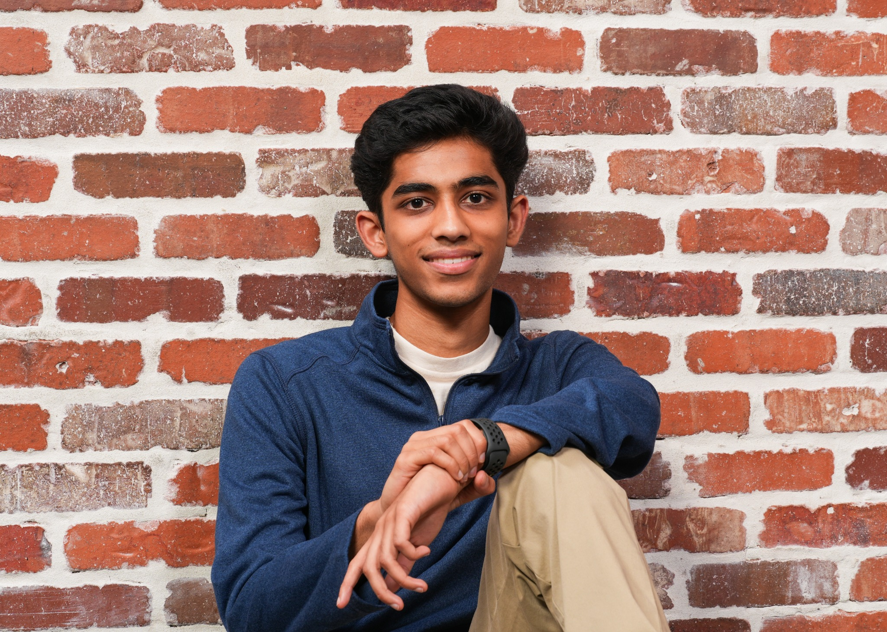

01 / DESIGN
Think in 3D.
I use CAD to turn an idea into a model, explore assemblies, and work through design decisions.
See the arbor press ↗Siddharth Gupta
DESIGN. BUILD. LEARN. REPEAT.
WALTON HIGH SCHOOL · CLASS OF 2027
I’m Siddharth Gupta, a senior pursuing the STEM engineering pathway. I explore ideas through design, code, and hands-on projects.
From an arbor press to a student’s first lines of code, I enjoy figuring things out and helping others do the same.

MY TOOLKIT
The tools and experiences I bring to a new challenge.
01 / DESIGN
I use CAD to turn an idea into a model, explore assemblies, and work through design decisions.
See the arbor press ↗02 / CODE
I build programming projects and websites, and share the basics of coding with younger students.
Explore coding projects ↗03 / CONNECT
Team projects, outreach, and tutoring have given me practice communicating ideas and helping a group move forward.
Explore my activities ↗DESIGN · ENGINEERING · CODE
A first look at my work. Select a project to read more.
OUTSIDE THE CLASSROOM
The teams, communities, and experiences I’m part of.
I helped coordinate 15+ environmental workshops at three elementary schools, managed club communications and the website, and promoted events by email.
Grades 11–12 · 3 hours/week · 15 weeks/yearI volunteered at park and roadside cleanups, served meals at Gurudwaras, and mentored younger students through SEWA AmeriCorps.
Grades 9–12 · 5 hours/week · 25 weeks/yearAcross four years, my projects included a smart medicine dispenser, a self-organizing cabinet, a music bot, and electromagnetic models.
Grades 9–12 · 3 hours/week · 25 weeks/yearEarned top-three placements in GaSTC Programming, Divergent Teams Hack, Computer Science Honor Society Hack, and ATL Cyber Clash.
Grades 9–12 · 10 hours/week · 15 weeks/yearI designed a 3D model of an arbor press, presented it to engineers, and earned the Best Design award.
Explore the project ↗I helped organize cultural events, including a food demonstration attended by more than 100 people, dance events, and a night market.
I provided virtual tutoring and homework help, including support for students with special needs and students from underserved communities.
I spent winter break helping younger students prepare block coding, animation, and voice mixing projects for a regional technology competition. During the summer, I also taught coding using Code.org.
I play violin in school orchestra and rhythm guitar in a neighborhood band. I also helped prepare middle school students for cultural performances.
A LITTLE ABOUT ME
I’m Siddharth, a senior at Walton High School in Marietta, Georgia. Through the STEM engineering pathway, I’m exploring how an idea becomes something you can design, build, and improve.
Mechanical and aerospace engineering interest me because they bring design and physics together. Programming gives me another way to experiment, from interactive projects to websites.
My engineering pathway ↗Violin in orchestra. Rhythm guitar in a neighborhood band. Another way to create something together.
Tutoring, coding mentorship, and environmental outreach let me take what I learn beyond my own projects.
Meet the rest of my world ↗